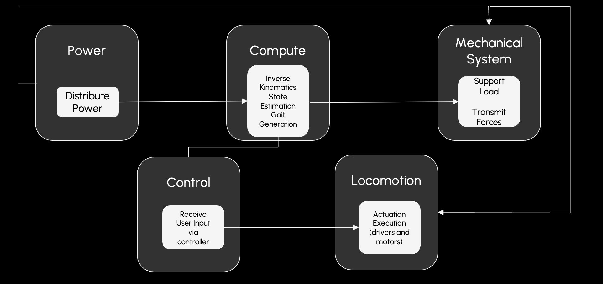
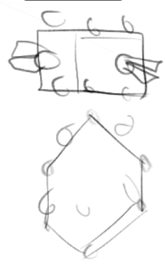

System Requirements
This page explains the architecture chosen to satisfy the team's requirements for locomotion, packaging, safety, and integration.
Locomotion & Maneuvering
| ID | Requirement | Specification |
|---|---|---|
| L-1 | Legged locomotion | Robot motion generated through coordinated leg motion |
| L-2 | Travel directions | At least forward and backward motion |
| L-3 | Turning radius | Turn in place with tripod gait or equivalent |
| L-4 | Calibration / navigation support | Camera pipeline should support tagged calibration and future navigation |
Payload, Geometry & Packaging
| ID | Requirement | Specification |
|---|---|---|
| S-1 | Footprint | ≤ 5 ft × 5 ft |
| S-2 | Ride height | Target 2–3 ft body height above the ground |
| S-3 | Payload target | Support at least a 170 lb rider / performance payload |
| S-4 | Transportability | Break down into a small number of major subassemblies |
| S-5 | Shipping goal | Pack into a 3 ft × 3 ft transport volume |
Safety & Controls
| ID | Requirement | Specification |
|---|---|---|
| SF-1 | Emergency stop | Accessible hardware stop for quick shutdown |
| SF-2 | Operator control | Xbox controller input to the Raspberry Pi, followed by Pi-generated servo-angle commands to the ESP32 |
| SF-3 | Gradual integration | Subsystems must be bench-testable before full assembly |
Functional Architecture
The project is partitioned into five functional blocks so the team can develop locomotion, electronics, perception, and structure in parallel.

Perception & Calibration
Camera-based AprilTag detection provides the robot with the information needed for calibration, tagged-target sensing, and future autonomous behavior.
Motion Planning
The Raspberry Pi receives Xbox controller inputs, computes body-relative foot trajectories, inverse kinematics, and gait timing, then produces servo-angle commands for stand, walk, turn, and future dance routines.
Embedded Control
The ESP32 receives concrete servo-angle commands from the Pi and manages timing-sensitive PWM output and safety logic.
Mechanical Structure
The rectangular body, six 3-DOF legs, and modular brackets translate servo motion into stable ground contact while staying manufacturable within course constraints.
Cyberphysical Architecture
The selected cyberphysical architecture uses high-torque servos rather than the earlier BLDC concept because it supports faster subsystem integration, simpler command routing, and lower-risk debugging within the semester schedule.

| Domain | Selected Components | Role |
|---|---|---|
| Perception & Safety Inputs | Raspberry Pi 5 camera module, AprilTag targets, emergency stop | AprilTag detection, calibration target sensing, and operator safety stop input |
| High-Level Compute | Raspberry Pi 5 | Xbox controller input handling, inverse kinematics, gait generation, servo-angle generation, simulation alignment, calibration, and future navigation logic |
| Embedded Control | ESP32 + PCA9685 PWM driver boards | Receives Pi-generated servo-angle commands and maintains timing-sensitive servo output |
| Actuation | 18 high-torque servos across six legs | Drives coxa, femur, and tibia joints for stance, swing, and turning maneuvers |
| Operator Interface | Xbox controller and hosted browser dashboard | Manual drive through the Xbox controller; runtime, calibration, camera, and dance workflows through the dashboard |
| Power | Battery packs, regulators, power distribution, wiring harnesses | Separates high-current servo loads from logic power where possible |
Design Rationale

Actuation & Leg Geometry
The robot uses six identical legs with three joints per leg: coxa for horizontal sweep, femur for upper-leg lift, and tibia for ground reach. A servo-based actuation stack gives the team a simpler control and integration path than a distributed BLDC controller network, which is important for the semester schedule and incremental bench testing.
The leg geometry model is shared across CAD, the IK solver, and MuJoCo so that updates to leg lengths or mounting positions propagate consistently through the project.
Compute Partition
The Raspberry Pi and ESP32 are intentionally split by responsibility. The Pi owns algorithmic tasks such as Xbox controller interpretation, gait generation, AprilTag processing, calibration logic, and servo-angle generation. The ESP32 owns fast, deterministic tasks such as command reception, PWM output, and hardware-side safety response.
Operator Input Choice
The team moved to an Xbox controller because it was simpler to integrate, more ergonomic for manual driving, and visually cleaner for demos than the earlier prototype input path. The controller sends high-level driver intent to the Raspberry Pi; the Pi converts that intent into explicit servo angles before sending commands to the ESP32.
Incremental Validation Strategy
The team’s workflow moves from simulation to single-leg bench tests to multi-leg hardware integration. This lowers risk by validating kinematics, servo directions, power wiring, and communication interfaces before the full robot is assembled.
Design Trade Studies
Leg Configuration: 2 DOF vs. 3 DOF

| Criterion | 2 DOF | 3 DOF |
|---|---|---|
| Turning in place | Limited | Supported |
| Lateral foot placement | Minimal | Available |
| Dance expressiveness | Restricted | Higher |
| Complexity | Lower | Higher but acceptable |
Decision: 3 DOF per leg. The added complexity is necessary to support stable gait design and expressive motion.
Body Shape: Hexagonal vs. Rectangular

| Criterion | Hexagonal | Rectangular |
|---|---|---|
| Usable internal volume | Less efficient | More efficient |
| Manufacturing simplicity | More angled joints | Simpler |
| Leg placement symmetry | Good | Good |
| Transport fit | Harder to pack | Better aligned with shipping constraint |
Decision: Rectangular body. It better supports packaging, structure, and accessible mounting space.
Actuation Architecture: BLDC + ODrive vs. High-Torque Servos
| Criterion | BLDC + ODrive | High-Torque Servos |
|---|---|---|
| Bring-up complexity | High | Moderate |
| Semester integration risk | Higher | Lower |
| Command path | Distributed motor control stack | Direct PWM-based joint control |
| Bench-test path | Harder to stage | Easier with single-leg tests |
Decision: High-torque servos. The team prioritized a controllable integration path and rapid subsystem validation over a more ambitious but riskier BLDC architecture.
Compute Partition: Single Controller vs. Raspberry Pi + ESP32
| Criterion | Single MCU | Pi + ESP32 Split |
|---|---|---|
| Computer vision headroom | Limited | Strong on Pi 5 |
| Real-time PWM timing | Shared with other tasks | Dedicated on ESP32 |
| Software modularity | Lower | Higher |
| Debugging | Tighter coupling | Clearer interfaces |
Decision: Split architecture. The Pi handles planning and perception; the ESP32 handles deterministic hardware-side control.